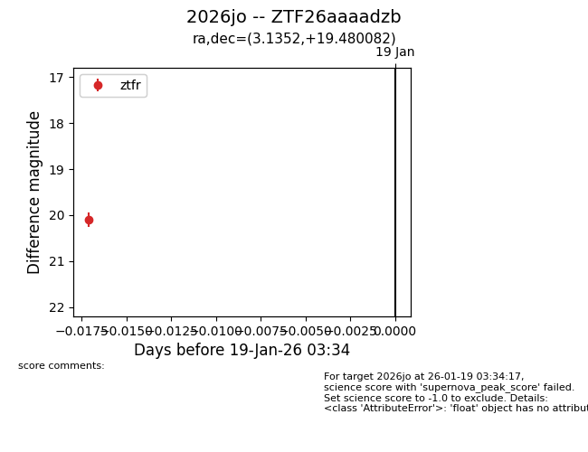
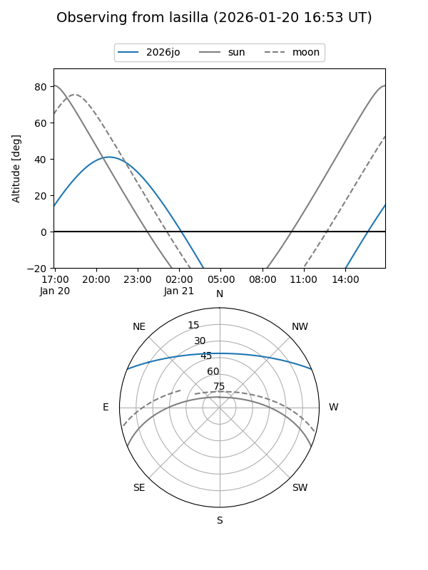
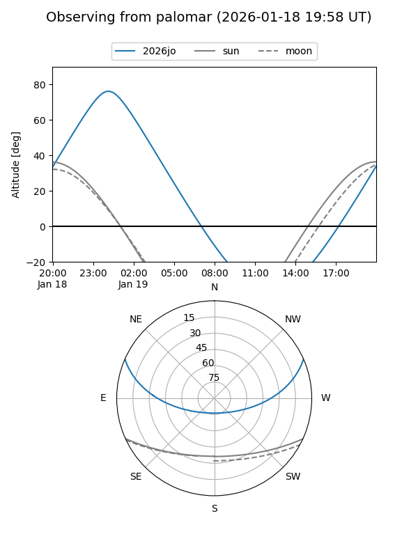

2026jo
Target 2026jo at 2026-01-21 03:36
Aliases and brokers:
FINK: link
Lasair: link
ALeRCE: link
TNS: link
YSE: link
alt names
ZTF26aaaadzb (ztf,fink_ztf)
2026jo (tns,yse)
Coordinates:
equatorial (ra, dec) = 3.1352,+19.48008
equatorial (HMS+DMS) = 00:12:32.44,+19:28:48.30
galactic (l, b) = (110.4692,-42.44843)
Flags:
Photometry:
last ztfr=20.10
1 ztfr detections
Lightcurve

Visibility


Additional plots